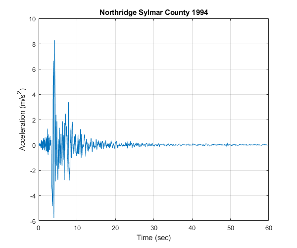
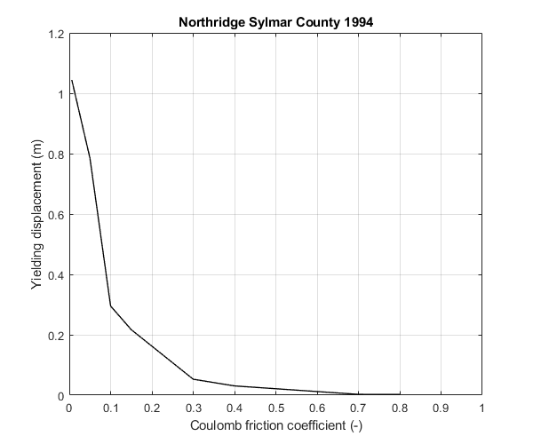
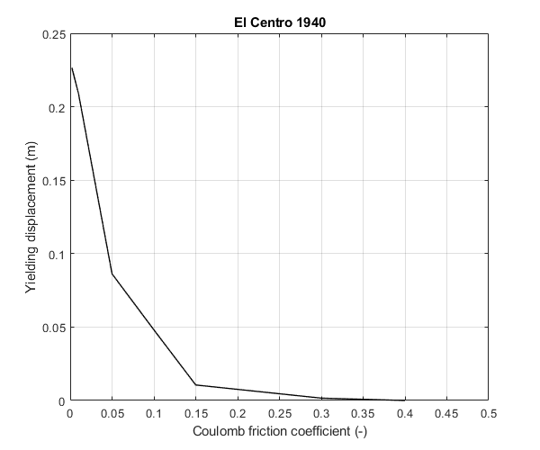

verification Rigid plastic sliding response spectrum
Contents
Reference
Paglietti, A., & Porcu, M. C. (2001). Rigid–plastic approximation to predict plastic motion under strong earthquakes. Earthquake engineering & structural dynamics, 30(1), 115-126.
Description
The rigid plastic sliding response spectra are extracted for two acceleration time histories: the Northridge (Sylmar County), Jan 1994 record and the El Centro, NS, May 1940 record, as presented in Table 1 of the above reference. The oscillator is considered to be ideally rigid-plastic sliding on horizontal plane. The acceleration time histories that are used for the extraction of the spectra are plotted in this example. The rigid plastic sliding response spectra extracted in this example are compared to the corresponding spectra that appear in Figure 6 of the above reference.
Earthquake motions
Load earthquake data of Northridge Sylmar County 1994 record
eqmotion={'Northridge_Sylmar_County'};
data=load([eqmotion{1},'.dat']);
t1=data(:,1);
dt1=t1(2)-t1(1);
xgtt1=data(:,2);
Load earthquake data of El Centro 1940 record
eqmotion={'elcentro_NS_trunc'};
data=load([eqmotion{1},'.dat']);
t2=data(:,1);
dt2=t2(2)-t2(1);
xgtt2=data(:,2);
Calculate rigid plastic sliding response spectrum of earthquake motion
Switch
sw='rpsrs';
Coulomb friction coefficients
CF1=[0.006;0.05;0.1;0.15;0.3;0.4;0.7;0.8]; CF2=[0.002;0.01;0.05;0.1;0.15;0.3;0.4];
Apply OpenSeismoMatlab once for each record
S1=OpenSeismoMatlab(dt1,xgtt1,sw,CF1); S2=OpenSeismoMatlab(dt2,xgtt2,sw,CF2);
Plot the acceleration time histories of the earthquake motions
Initialize figure
figure() % Plot the acceleration time history plot(t1,xgtt1) % Finalize figure grid on title('Northridge Sylmar County 1994') xlabel('Time (sec)') ylabel('Acceleration (m/s^2)') drawnow; pause(0.1)
Initialize figure
figure() % Plot the acceleration time history plot(t2,xgtt2) % Finalize figure grid on title('El Centro 1940') xlabel('Time (sec)') ylabel('Acceleration (m/s^2)') drawnow; pause(0.1)

Plot the rigid plastic sliding response spectra
Initialize figure
figure() % Plot the rigid plastic sliding response spectra plot(S1.CF,S1.RPSSd, 'k-', 'LineWidth', 1) % Finalize figure grid on xlabel('Coulomb friction coefficient (-)') ylabel('Yielding displacement (m)') title('Northridge Sylmar County 1994') xlim([0,1]) drawnow; pause(0.1)
Initialize figure
figure() % Plot the rigid plastic sliding response spectra plot(S2.CF,S2.RPSSd, 'k-', 'LineWidth', 1) % Finalize figure grid on xlabel('Coulomb friction coefficient (-)') ylabel('Yielding displacement (m)') title('El Centro 1940') xlim([0,0.5]) drawnow; pause(0.1)
Copyright
Copyright (c) 2018-2023 by George Papazafeiropoulos
- Major, Infrastructure Engineer, Hellenic Air Force
- Civil Engineer, M.Sc., Ph.D.
- Email: gpapazafeiropoulos@yahoo.gr